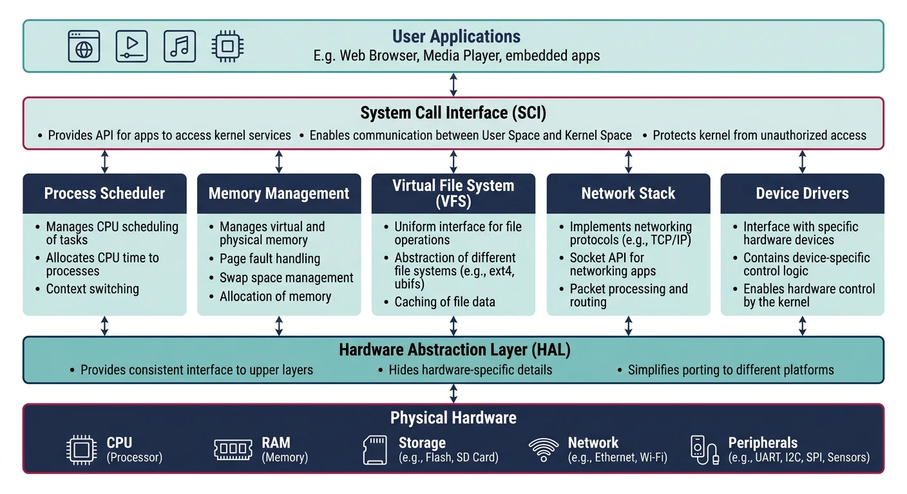
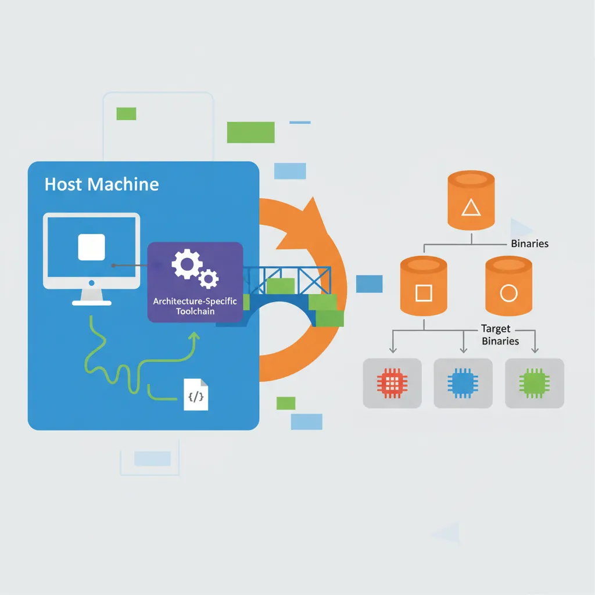
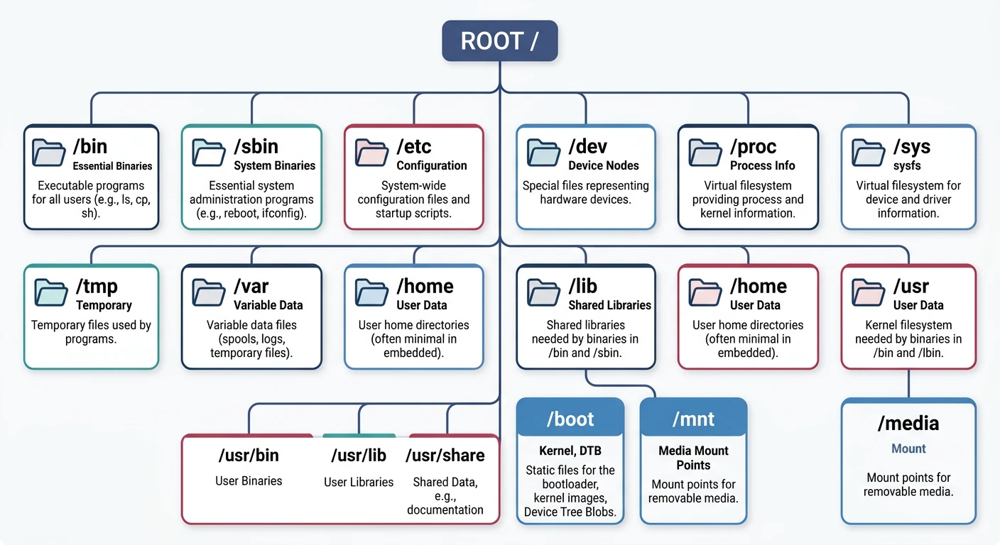
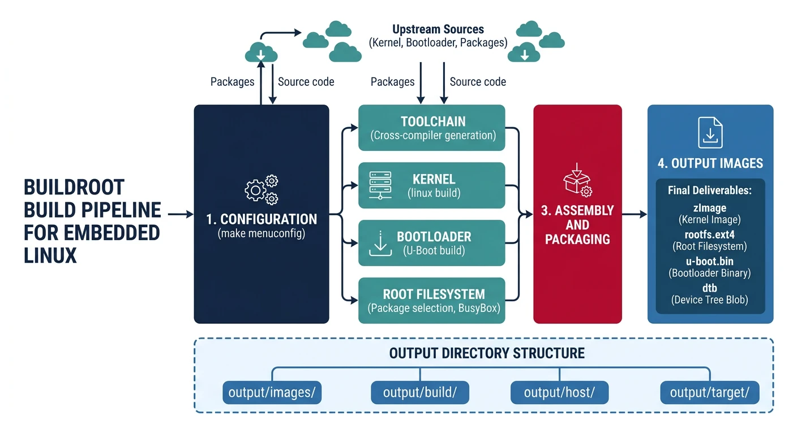

Introduction to Embedded Linux
Embedded Systems Mastery
Fundamentals & Architecture
Microcontrollers, memory, interruptsSTM32 & ARM Cortex-M Development
ARM architecture, peripherals, HALRTOS Fundamentals (FreeRTOS/Zephyr)
Task management, scheduling, synchronizationCommunication Protocols Deep Dive
UART, SPI, I2C, CAN, USBEmbedded Linux Fundamentals
Kernel, userspace, build systemsU-Boot Bootloader Mastery
Boot process, configuration, customizationLinux Device Drivers
Character, block, network driversLinux Kernel Customization
Kernel configuration, modules, debuggingAndroid System Architecture
Android layers, services, frameworkAndroid HAL & Native Development
HAL interfaces, NDK, JNIAndroid BSP & Kernel
BSP development, kernel integrationDebugging & Optimization
JTAG, GDB, profiling, optimizationAUTOSAR & EB Tresos
AUTOSAR architecture, MCAL, MPU protectionEmbedded Linux runs on everything from routers and smart TVs to industrial controllers and medical devices. Unlike bare-metal or RTOS systems, Linux provides a full OS with networking, filesystems, and massive software ecosystem—but requires more resources (typically 32MB+ RAM, 100MHz+ CPU).
When to Choose Embedded Linux
Linux vs. RTOS vs. Bare-Metal
| Factor | Bare-Metal | RTOS | Embedded Linux |
|---|---|---|---|
| RAM | <10KB | 10KB-1MB | 32MB+ |
| Flash | <100KB | 100KB-1MB | 8MB+ |
| Networking | Basic | lwIP, basic | Full stack |
| Filesystem | None/FATFS | Basic | Full POSIX |
| Development | Simple | Moderate | Complex |
| Real-time | Excellent | Excellent | Good (PREEMPT_RT) |
- Complex networking (TCP/IP, WiFi, Bluetooth stack)
- Rich UI/display requirements
- Need open-source software ecosystem
- Filesystem, USB host, multimedia
- Developer productivity over resource optimization
Linux Kernel Architecture
The Linux kernel is monolithic but modular—core functionality runs in kernel space while drivers can be loadable modules.

Kernel Subsystems
- Process Scheduler: CFS (Completely Fair Scheduler), real-time classes
- Memory Management: Virtual memory, page allocation, slab allocator
- VFS (Virtual File System): Abstraction over ext4, NFS, tmpfs, etc.
- Networking: TCP/IP stack, netfilter, socket API
- Device Drivers: Character, block, network drivers
- IPC: Pipes, shared memory, message queues, signals
# Kernel source structure
linux/
+-- arch/ # Architecture-specific (arm, arm64, x86, riscv)
+-- drivers/ # Device drivers (gpio, i2c, spi, usb, net, ...)
+-- fs/ # Filesystems (ext4, nfs, proc, sysfs)
+-- include/ # Kernel headers
+-- init/ # Kernel initialization (main.c)
+-- kernel/ # Core kernel (sched, fork, signal)
+-- mm/ # Memory management
+-- net/ # Networking stack
+-- scripts/ # Build scripts, Kconfig
+-- Documentation/ # Kernel docs (essential reading!)
Cross-Compilation Toolchains
Embedded targets run on ARM, MIPS, or RISC-V—different from your x86 development machine. A cross-compiler runs on the host but produces binaries for the target.

# Install ARM cross-compiler (Ubuntu/Debian)
sudo apt install gcc-arm-linux-gnueabihf # 32-bit ARM
sudo apt install gcc-aarch64-linux-gnu # 64-bit ARM
# Verify installation
arm-linux-gnueabihf-gcc --version
# Cross-compile a simple program
cat > hello.c << 'EOF'
#include
int main() {
printf("Hello from ARM!\n");
return 0;
}
EOF
arm-linux-gnueabihf-gcc -o hello_arm hello.c
# Check binary architecture
file hello_arm
# hello_arm: ELF 32-bit LSB executable, ARM, EABI5, ...
arch-vendor-os-abi-tool
arm-linux-gnueabihf-gcc? ARM, Linux, GNU EABI, hard-floataarch64-linux-gnu-gcc? 64-bit ARM, Linux, GNUarm-none-eabi-gcc? ARM, no OS (bare-metal)
Filesystem Hierarchy
Linux follows the Filesystem Hierarchy Standard (FHS). Understanding this structure is essential for embedded system configuration.

/
+-- bin/ # Essential user binaries (ls, cp, sh)
+-- boot/ # Bootloader, kernel image, device tree
+-- dev/ # Device nodes (/dev/ttyS0, /dev/sda)
+-- etc/ # System configuration files
+-- home/ # User home directories
+-- lib/ # Shared libraries (libc.so, ld-linux.so)
+-- mnt/ # Temporary mount points
+-- proc/ # Process info (virtual filesystem)
+-- root/ # Root user's home
+-- sbin/ # System binaries (init, mount)
+-- sys/ # Kernel/device info (virtual filesystem)
+-- tmp/ # Temporary files (often tmpfs)
+-- usr/ # Secondary hierarchy (usr/bin, usr/lib)
+-- var/ # Variable data (logs, spool)
Root Filesystem Types
Embedded Filesystem Options
| Filesystem | Use Case | Features |
|---|---|---|
| ext4 | eMMC, SD card | Journaling, mature, R/W |
| SquashFS | Read-only root | Compressed, immutable |
| UBIFS | Raw NAND flash | Wear leveling, compression |
| JFFS2 | NOR flash (legacy) | Log-structured, older |
| tmpfs | RAM-based /tmp | Fast, volatile |
| NFS | Development | Network root, easy updates |
Buildroot Build System
Buildroot generates complete embedded Linux systems—toolchain, kernel, bootloader, and root filesystem. It's simpler than Yocto, ideal for smaller projects.

# Clone Buildroot
git clone https://github.com/buildroot/buildroot.git
cd buildroot
# List available board configs
ls configs/ | grep qemu
# qemu_arm_versatile_defconfig, qemu_aarch64_virt_defconfig, ...
# Configure for QEMU ARM (easy testing)
make qemu_arm_versatile_defconfig
# Customize (optional)
make menuconfig
# - Target options → Architecture, CPU, FPU
# - Toolchain → External or Buildroot toolchain
# - System configuration → Hostname, init system
# - Kernel → Version, config file
# - Target packages → Select applications
# Build (takes 30-60 minutes first time)
make -j$(nproc)
# Output files
ls output/images/
# zImage, versatile-pb.dtb, rootfs.ext2
# Test in QEMU
qemu-system-arm -M versatilepb \
-kernel output/images/zImage \
-dtb output/images/versatile-pb.dtb \
-drive file=output/images/rootfs.ext2,if=scsi,format=raw \
-append "root=/dev/sda console=ttyAMA0" \
-serial stdio -nographic
Yocto Project
Yocto/OpenEmbedded is the industry-standard build system for production embedded Linux. More complex than Buildroot but highly flexible and maintainable.
- Recipe (.bb): Describes how to build a package
- Layer: Collection of recipes (meta-raspberrypi, meta-qt5)
- BitBake: Build engine (like make but smarter)
- Machine: Target hardware definition
- Image: Complete root filesystem specification
# Initial Yocto setup (requires ~50GB disk, 8GB+ RAM)
git clone git://git.yoctoproject.org/poky
cd poky
git checkout kirkstone # LTS release
# Initialize build environment
source oe-init-build-env
# Edit conf/local.conf
# MACHINE = "qemuarm"
# DISTRO = "poky"
# Build minimal image
bitbake core-image-minimal
# Build with more packages
bitbake core-image-full-cmdline
# Output
ls tmp/deploy/images/qemuarm/
# core-image-minimal-qemuarm.ext4, zImage, ...
Userspace Programming
Linux userspace programming uses standard POSIX APIs. Here's how to interact with hardware from user applications.
// GPIO control via sysfs (deprecated but simple)
#include
#include
#include
#include
int gpio_export(int pin) {
int fd = open("/sys/class/gpio/export", O_WRONLY);
char buf[8];
snprintf(buf, sizeof(buf), "%d", pin);
write(fd, buf, strlen(buf));
close(fd);
return 0;
}
int gpio_set_direction(int pin, const char *dir) {
char path[64];
snprintf(path, sizeof(path), "/sys/class/gpio/gpio%d/direction", pin);
int fd = open(path, O_WRONLY);
write(fd, dir, strlen(dir));
close(fd);
return 0;
}
int gpio_write(int pin, int value) {
char path[64];
snprintf(path, sizeof(path), "/sys/class/gpio/gpio%d/value", pin);
int fd = open(path, O_WRONLY);
write(fd, value ? "1" : "0", 1);
close(fd);
return 0;
}
int main() {
gpio_export(17); // Export GPIO17
gpio_set_direction(17, "out"); // Set as output
while (1) {
gpio_write(17, 1); // LED on
sleep(1);
gpio_write(17, 0); // LED off
sleep(1);
}
return 0;
}
// Modern GPIO via libgpiod (recommended)
#include
#include
int main() {
struct gpiod_chip *chip = gpiod_chip_open("/dev/gpiochip0");
struct gpiod_line *line = gpiod_chip_get_line(chip, 17);
gpiod_line_request_output(line, "example", 0);
while (1) {
gpiod_line_set_value(line, 1);
sleep(1);
gpiod_line_set_value(line, 0);
sleep(1);
}
gpiod_line_release(line);
gpiod_chip_close(chip);
return 0;
}
Init Systems (systemd, BusyBox)
The init system is PID 1—the first userspace process. It manages service startup and system state.
Init System Comparison
| Init | Size | Features | Best For |
|---|---|---|---|
| BusyBox init | ~100KB | Minimal, script-based | Tiny systems |
| SysVinit | ~500KB | Shell scripts, runlevels | Simple systems |
| systemd | ~10MB | Parallel startup, units, journald | Full-featured |
# BusyBox inittab (/etc/inittab)
::sysinit:/etc/init.d/rcS
::respawn:/sbin/getty -L ttyAMA0 115200 vt100
::shutdown:/bin/umount -a -r
# systemd service file (/etc/systemd/system/myapp.service)
[Unit]
Description=My Embedded Application
After=network.target
[Service]
Type=simple
ExecStart=/usr/bin/myapp
Restart=always
RestartSec=5
[Install]
WantedBy=multi-user.target
# Enable and start service
systemctl enable myapp
systemctl start myapp
systemctl status myapp
Debugging Linux Systems
# Essential debugging commands
dmesg # Kernel messages (boot log)
cat /proc/cmdline # Kernel boot parameters
cat /proc/cpuinfo # CPU information
cat /proc/meminfo # Memory stats
lsmod # Loaded kernel modules
lspci / lsusb # PCI/USB devices
strace ./myapp # System call tracing
ltrace ./myapp # Library call tracing
gdb ./myapp core # Debug core dump
# Remote debugging
# On target:
gdbserver :1234 ./myapp
# On host:
arm-linux-gnueabihf-gdb ./myapp
(gdb) target remote 192.168.1.100:1234
(gdb) break main
(gdb) continue
Conclusion & What's Next
You've learned the foundations of Embedded Linux—kernel architecture, cross-compilation, filesystem hierarchy, and build systems. Buildroot is great for learning and small projects; Yocto for production systems.
- Linux needs 32MB+ RAM, complex but powerful
- Cross-compile with arm-linux-gnueabihf-gcc
- Buildroot: Simple, fast builds for learning
- Yocto: Industry standard, layer-based, production-ready
- Use libgpiod for modern GPIO access
In Part 6, we'll master U-Boot—the bootloader that initializes hardware and loads Linux on most embedded systems.